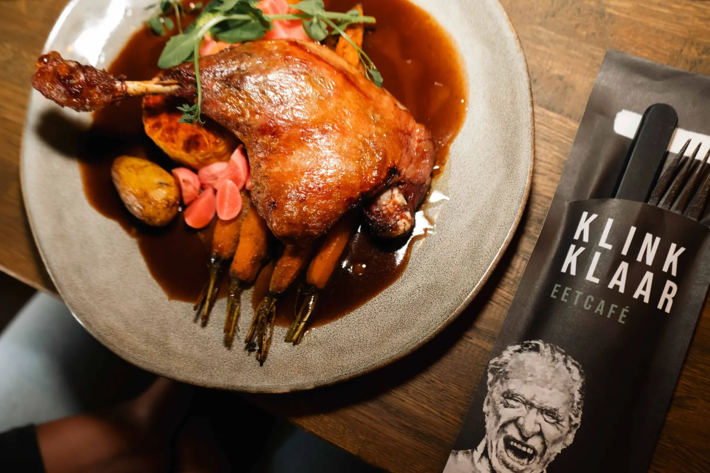
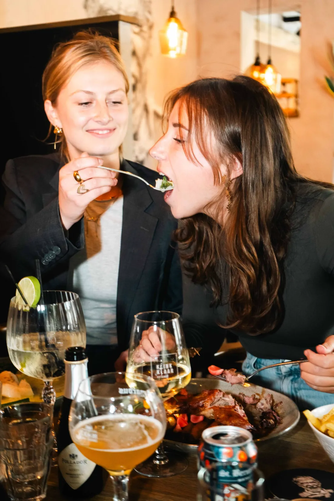
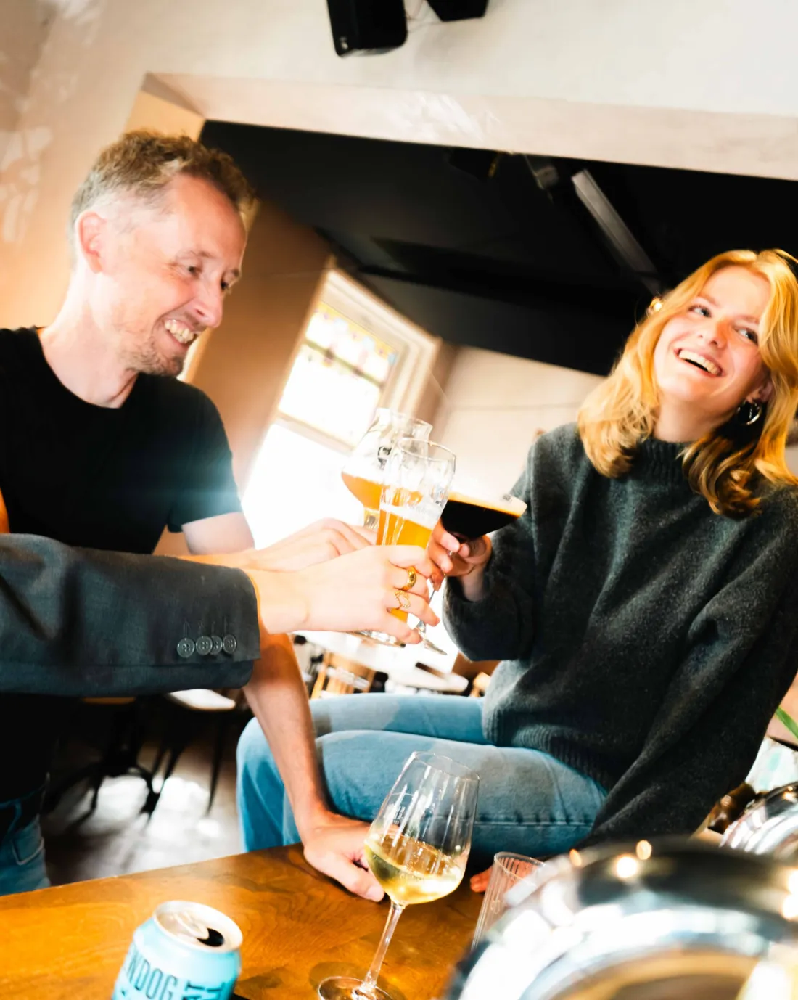
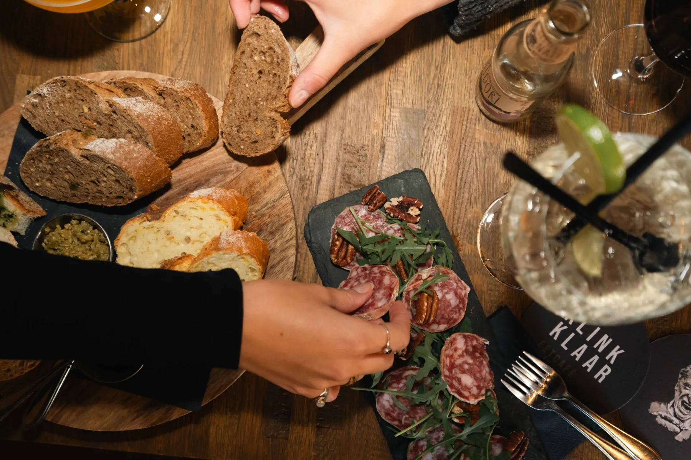
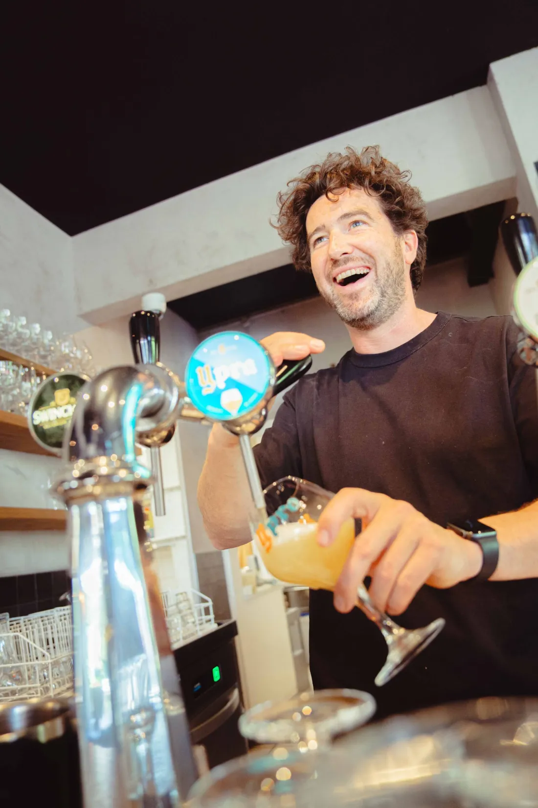
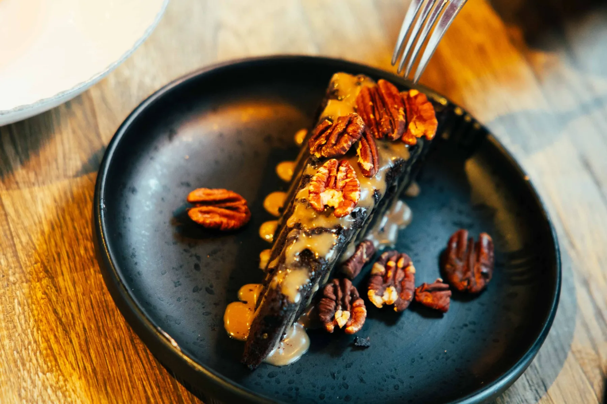
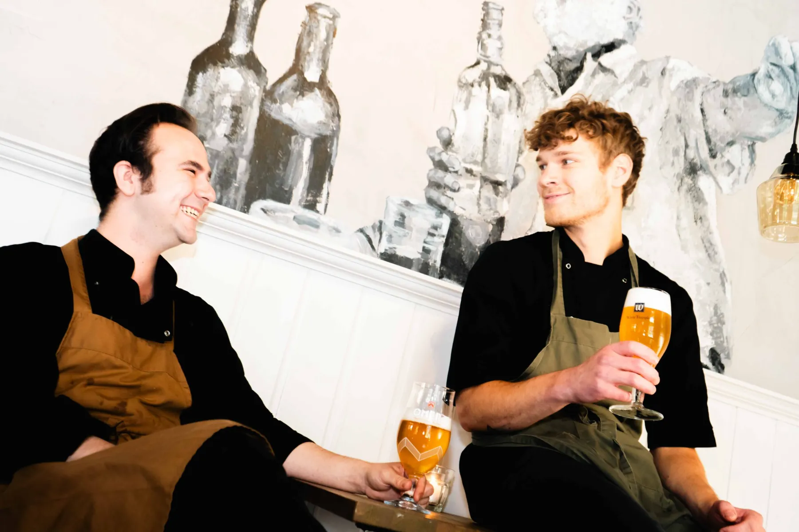

Tooropstraat 59, Nijmegen Oost
Klinkklaar
Het eetcafé van Oost. Al 40 jaar een begrip in Nijmegen, en zeven dagen per week staan we voor je klaar.
Lekker eten hoeft niet moeilijk of duur te zijn.
Welkom bij Klinkklaar, het eetcafé van Nijmegen Oost. Met zorg koken we hier goede gerechten voor een schappelijke prijs. Bij ons kun je zeven dagen per week terecht, voor een fijne kaart en een gezonde dosis energie. Samen maken we er een feestje van.
Onze doelstelling? Het gezelligste eetcafé van Nijmegen en ver daarbuiten zijn. Wees welkom!
- 40 jaar een begrip in Oost
- 7 dagen per week open
- 4,3 op Google, uit 399 recensies


Geen poeha, maar klinkklaar lekker eten.
Zo werd Klinkklaar een begrip in Oost. We wisselen de kaart vaak en spontaan, dus wat je hier ziet kan net anders zijn als je komt. Hoofdgerechten worden geserveerd met frietjes (en salade? vraag ernaar!).
- Knolselderijsoep9met blauwe kaas, dille en hazelnoot
- Gebakken paddenstoelen11brioche, roomkaas en Amsterdamse ui
- Geroosterde bloemkool11gegrilde bosuisaus en zoetzure zonnebloempit
- Vispasteitje11witvis, champignons, doperwt
- Pulled runder short rib13pruimenlak, coleslaw, rode ui keuzemenu +2
- Carpaccio met pesto13parmezaan, rucola en pijnboompitjes keuzemenu +2
- Kaasfondue van emmentaler en gruyère25groenten en stokbrood keuzemenu +1
- Gnocchi met taleggiosaus24spruiten, zoetzure bloemkool en gerookte amandel
- Freekeh met geroosterde pompoen24cashewcrème en feta
- Vis van de dag25witte misosaus, gemarineerde broccoli keuzemenu +1
- Zalmfilet24geroosterde paprikasaus, spinazie
- Geroosterde parelhoenbout24mosterdcidersaus
- Zachtgegaarde wildzwijnsprocureur26cognacroomsaus keuzemenu +2
- Gegrilde kogelbiefstuk27peperroomsaus keuzemenu +3
Hoofdgerechten worden geserveerd met frietjes (& salade? vraag ernaar!)
- Crème brûlée9kardemom
- Appelstrudel9vanillesaus en kaneelijs
- Stroopwafel trifel9trifel van yoghurt, stroop en stroopwafel
- Kaasplankje11drie soorten (rauwmelkse) kaas met vijgenkoek keuzemenu +2
- Koffie | espresso3,3
- Dubbele espresso4,5
- Cappuccino | koffie verkeerd3,8
- Latte macchiato | flat white4,5
- De échte warme Chocomel4
- Havermelk | decafé | slagroom+0,5
- Thee3,3
- Verse thee, gember of munt4
- Verse thee, sinaasappel-kaneel4,5
Échte natafelen
- Espresso martini11,5klassieker, je kent hem wel...
- Glaswerk GT12,5kruidige gin met tonen van salie en rozemarijn uit de Hobbemastraat
- Pimpelmees GT12,5florale gin met een tikje spice en liefde uit de Hazenkamp
- Klinkklaar GT12,5fris en fruitig als Klinky! Citrusfruit gedreven gin
Biertje van het moment
- La Trappe Bock, 0,25 l6
- Guinness, 0,5 l8
Nog meer lekkers
- Irish coffee8,5
- Spanish coffee8,5
- Scottish coffee8,5
- French coffee8,5
- Italian coffee8,5
- Baileys coffee8,5
- Grand Marnier4,8
- Cointreau4,8
- Licor 434,8
- Dom Benedictine4,8
- Amaretto4,8
- Kahlua4,8
- Tia Maria4,8
Andere dorst? Vraag ons of er nog meer is!




Reserveren is het nieuwe normaal.
Dus graag even een berichtje of belletje vooraf, dan staat je tafel klaar. Mail naar reserveren@klinkklaar.nl of bel ons.
Zeven dagen per week, aan de Tooropstraat.
Eetcafé Klinkklaar ligt in het hart van het prachtige Nijmegen Oost, op de Tooropstraat 59. Vandaar: het eetcafé van Oost! In dit gezellige hoekpand hangt een huiselijke sfeer, het terras glimt elke avond in de vroege avondzon. De deur staat altijd open.
Plan je route Binnenkijken bij Klinkklaar
Fietsers parkeren nog altijd om niets voor de deur.